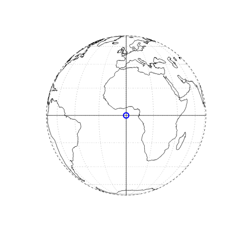
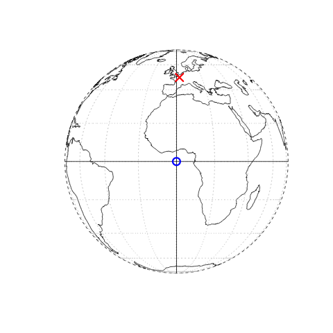
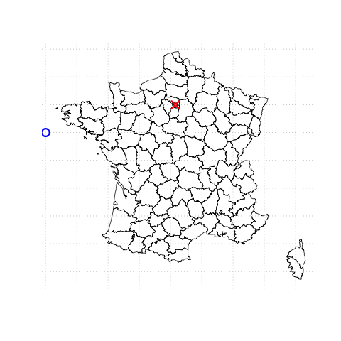
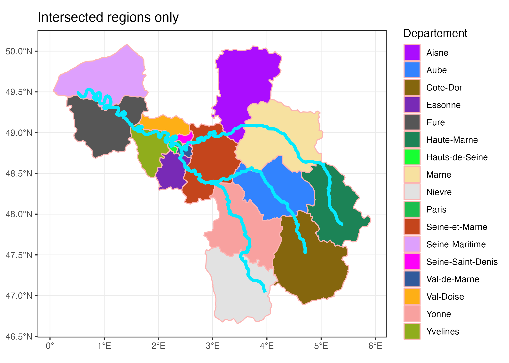
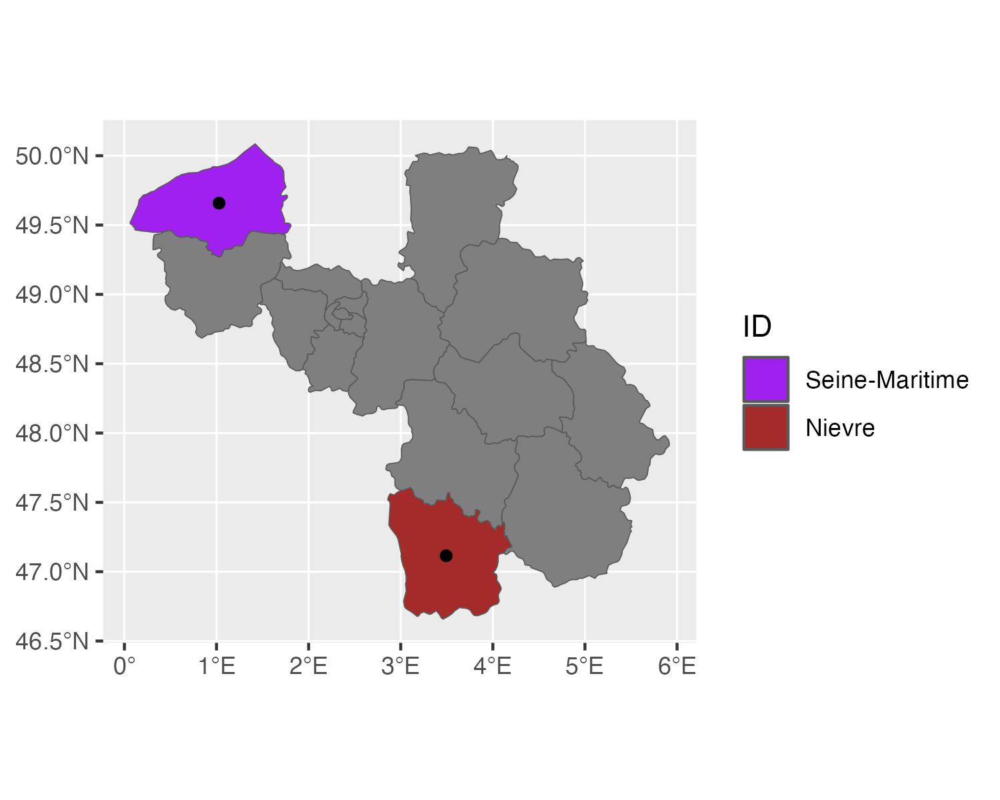
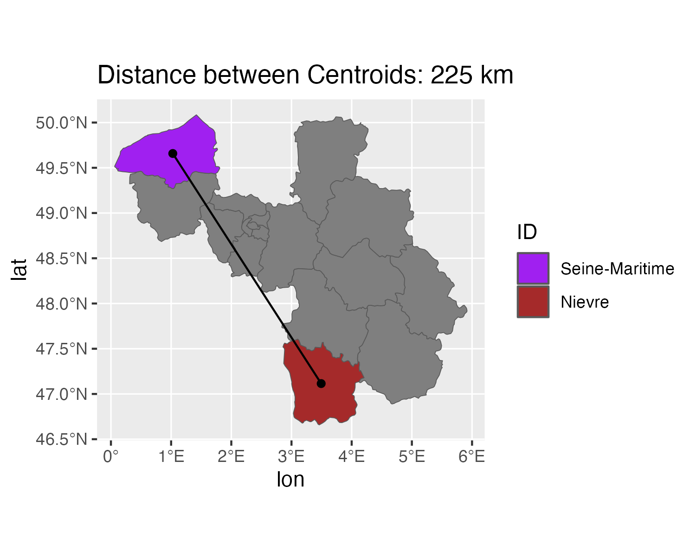

library(sf)Linking to GEOS 3.11.0, GDAL 3.5.3, PROJ 9.1.0; sf_use_s2() is TRUERSciencesPo Intro To Programming 2023
25 March, 2024
In this lecture we will cover some basics about geospatial data and how to handle it with R. Spatial data is getting always more important, so we need a powerful tool to work with it.
tl;dr
Yes, R is a fully fledged GIS. No, you don’t need an ArchGIS (or other) license to do real work with spatial data (I don’t have one, and I use it for real work 😉).
R is our main reference.sf package vignettes are outstanding.1. Vector Data
We represent things with points, lines and polygons. We can scale and stretch and transform those easily with mathematical operations. Can increase precision to arbitrary levels (can always zoom in futher).
2. Raster Data
We have fixed-size tiles or cells (like a mosaic, or like pixels), which form a grid. Fixed resolution.
👉 This lecture deals only with Vector Data.
c(2.34,48.85)

c(2.34,48.85) in WGS64
c(600256.4, 127726.4) in NTF Lambert North Francec(600256.4, 127726.4) in NTF Lambert North France
c(600256.4, 127726.4) actually mean?Figure from Geocomputation with R. Geocentric and local geodetic datums shown on top of a geoid (in false color and the vertical exaggeration by 10,000 scale factor). Image of the geoid is adapted from the work of Ince et al. (2019)
Rsf being the main one. That itself relies on several other lower level libraries.source unless you know why.Let’s read a shapefile from the sf package:
Reading layer `nc' from data source
`/Library/Frameworks/R.framework/Versions/4.2-arm64/Resources/library/sf/shape/nc.shp'
using driver `ESRI Shapefile'
Simple feature collection with 100 features and 14 fields
Geometry type: MULTIPOLYGON
Dimension: XY
Bounding box: xmin: -84.32385 ymin: 33.88199 xmax: -75.45698 ymax: 36.58965
Geodetic CRS: NAD27Simple feature collection with 6 features and 4 fields
Geometry type: MULTIPOLYGON
Dimension: XY
Bounding box: xmin: -81.74107 ymin: 36.07282 xmax: -75.77316 ymax: 36.58965
Geodetic CRS: NAD27
AREA NAME FIPS BIR79 geometry
1 0.114 Ashe 37009 1364 MULTIPOLYGON (((-81.47276 3...
2 0.061 Alleghany 37005 542 MULTIPOLYGON (((-81.23989 3...
3 0.143 Surry 37171 3616 MULTIPOLYGON (((-80.45634 3...
4 0.070 Currituck 37053 830 MULTIPOLYGON (((-76.00897 3...
5 0.153 Northampton 37131 1606 MULTIPOLYGON (((-77.21767 3...
6 0.097 Hertford 37091 1838 MULTIPOLYGON (((-76.74506 3...geometry column.data.frame.ggplot2st_ (for spatio-temporal)x,y we can compute things like st_distance(x,y), st_intersect(x,y), etcst_area(x), st_union(x), st_buffer(x,dist) etc# copied from https://github.com/uo-ec607/lectures
nc_centroid = st_centroid(nc)
ggplot(nc) +
geom_sf(fill = "black", alpha = 0.8, col = "white") +
geom_sf(data = nc_centroid, col = "red") + ## Notice how easy it is to combine different sf objects
labs(
title = "Counties of North Carolina",
subtitle = "Centroids in red"
)# copied from https://github.com/uo-ec607/lectures
# install.packages(c("maps","spData"))
## Get the data
france = st_as_sf(
maps::map('france',
plot = FALSE,
fill = TRUE)
)
data("seine",
package = "spData")
## Make sure they have the same projection
seine = st_transform(seine,
crs = st_crs(france))seine = st_transform(seine, crs = st_crs(france))
sf_use_s2(FALSE) # need to turn off because of invalid geometry
france_intersected = st_intersection(france, seine)
head(france_intersected,2)Simple feature collection with 2 features and 2 fields
Geometry type: LINESTRING
Dimension: XY
Bounding box: xmin: 3.254238 ymin: 48.63712 xmax: 4.872966 ymax: 49.09028
Geodetic CRS: +proj=longlat +ellps=clrk66 +no_defs +type=crs
ID name geom
Aisne Aisne Marne LINESTRING (3.608053 49.089...
Marne Marne Marne LINESTRING (4.872966 48.637...pl4 = st_join(france, seine) %>%
## Get rid of regions with no overlap
dplyr::filter(!is.na(name)) %>%
## Some regions are duplicated b/c two
## branches of the river network flow through them
dplyr::distinct(ID, .keep_all = T) %>%
## pipe into ggplot
ggplot() +
geom_sf(alpha = 0.5,
fill = "#01731f",
col = "#fcb4b3", # of borders
linewidth = 0.5) + # of borders
geom_sf(data = seine, col = "#05E9FF", lwd = 1) +
labs(title = "Intersected regions only") +
theme_bw()
ggsave(plot = pl4,"images/seine4.png",
width=7, height=5)
d5 = st_join(france, seine) %>%
## Get rid of regions with no overlap
dplyr::filter(!is.na(name)) %>%
## Some regions are duplicated b/c two
## branches of the river network flow through them
dplyr::distinct(ID, .keep_all = T)
my_colors = palette.colors(nrow(d5), palette = "Alphabet")
names(my_colors) <- NULL
## pipe into ggplot
pl5 = ggplot(data = d5) +
geom_sf(aes(fill = ID),
col = "#fcb4b3", # of borders
linewidth = 0.5) + # of borders
geom_sf(data = seine, col = "#05E9FF", lwd = 1.5) +
labs(title = "Intersected regions only", fill = "Departement") +
theme_bw() +
scale_fill_manual(values = my_colors)
ggsave(plot = pl5,"images/seine5.png",
width=7, height=5)What’s the (straight-line) distance between 2 points?
As in
What’s the distance between the centroids of the Seine-Maritime and Nievre Departements?
Modifying the plot from the previous task, produce 2 new plots
Hint:


Desired Outputs
cvec = rep(NA, length(unique(d5$ID)))
names(cvec) <- unique(d5$ID)
cvec["Seine-Maritime"] <- "purple"
cvec["Nievre"] <- "brown"
p6 = ggplot(d5) + geom_sf()
p6 = ggplot(d5) + geom_sf(aes(fill = ID))
p6 = p6 + scale_fill_manual(values = cvec, limits= c("Seine-Maritime","Nievre"))
subdeps = d5 %>% dplyr::filter(ID %in% c("Seine-Maritime","Nievre"))
p6 = p6 + geom_sf(data = st_centroid(subdeps))
ggsave(plot = p6, "images/distance1.png", width = 5,height=4)
dists = st_distance(subdeps) %>% units::set_units("km")
coords = st_centroid(subdeps) %>% st_coordinates()
coords = data.frame(lon = coords[1,"X"],
lat = coords[1,"Y"],
lon_end = coords[2,"X"],
lat_end = coords[2,"Y"])
p7 = p6 + geom_segment(data = coords, aes(lon, lat, xend = lon_end, yend = lat_end))
p7 = p7 + ggtitle(paste("Distance between Centroids:",round(dists[1,2],0), "km"))
ggsave(plot = p7, "images/distance2.png",width = 5,height=4)R package {raster} is the very mature and traditional solution.R package {star} is a great recent development in this space.{tidycensus}.sf and raster intro by NCEAS